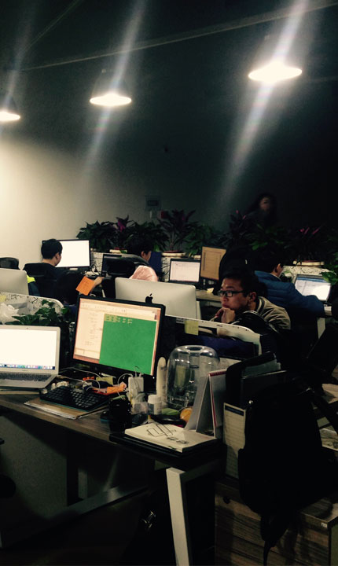

-
Context-AwareUtilizzando il motore context-aware computing e analisi di grandi quantità di dati, è possibile disegnare il profilo del cliente e percepire scenario uso per fornire ai clienti servizi proattivi e tempestivi. Pensate a voi, pensate oltre a voi, e capirete meglio di voi!
-
Cloud ReadySulla base dell’infrastruttura cloud pubblica, consente un'esperienza senza soluzione di continuità durante l'accesso ai servizi online con auto online e dispositivi mobili.
-
SocialFocalizzarsi meglio sulle caratteristiche dei social network con molta esperienza nell’interattività dell’utente progettata per la condivisione e il collegamento in qualsiasi momento, che non solo migliora notevolmente la viscosità dell’utente, accelera la promozione per aiutarvi a trovare amici veri, ma anche getta le basi per un marketing preciso.
-
ECOPiattaforma aperta per esporre servizi e API dati per gli sviluppatori per lo sviluppo di applicazioni creative e per i fornitori di servizi per ottenere rapporti analitici di dati. Sostenibile, operabile, condivisibile, celebra insieme e vinci insieme.
- Aggiornata Piattaforma
in ReteCLOUDMove™自主研发基础联网汽车架构，结合云端技术，做好标准化的汽车互联平台，针对汽车制造商提供一站式服务。计划未来面向整个行业开源。
- Servizi di consulenza
professionaleGEARMove™利用自身强大的专家背景，向机构（车厂等）提供专业智能汽车互联解决方案和相关战略咨询，同时提供项目实施服务。
- Piattaforma smart EQDREAMove™
成为智能汽车的"大脑"，围绕"人"和"车"来感知情景实现个性化服务，将汽车变身为智能信息节点，丰富人们对汽车的价值观。
- Veicolo come piattaforma
di servizioJOYMove™把汽车的商品交易属性升华到使用服务属性，让出行体验变得便捷个性化、成本低廉，整合互联网和汽车企业资源，激活更多商业价值。


- 
ADDRESS Jingyuan Art Park, Via Guangqu numero 3 , Distretto di Chaoyang, Pechino
TEAM
Il team di fondatori è composto da membri provenienti dalle migliori aziende IT, società di consulenza, operatori di telecomunicazioni, società di internet, fabbriche automobilistiche, e giovani produttori cinematografici, tutti con sogni e passione imprenditoriale.
- Jingyuan Art Park, No.3, Guangqu Road, Chaoyang District, Beijing.100085
- contact@futuremove.cnjoinus@futuremove.cn
- 010-8325656

Copyright 2015 © FutureMove Technologies Co.,Ltd. All rights reserved.